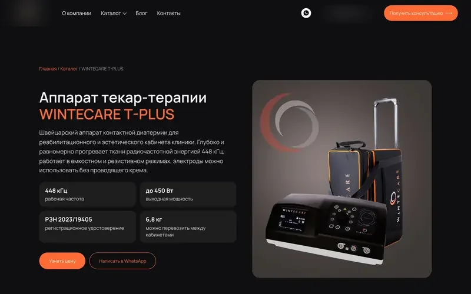
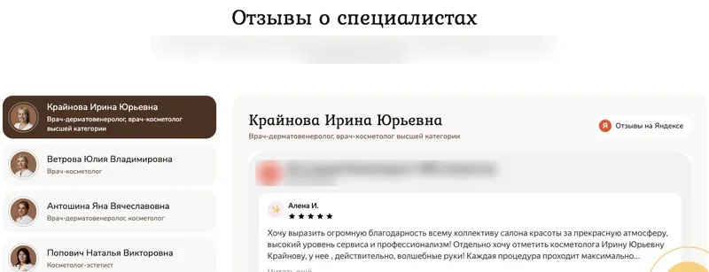
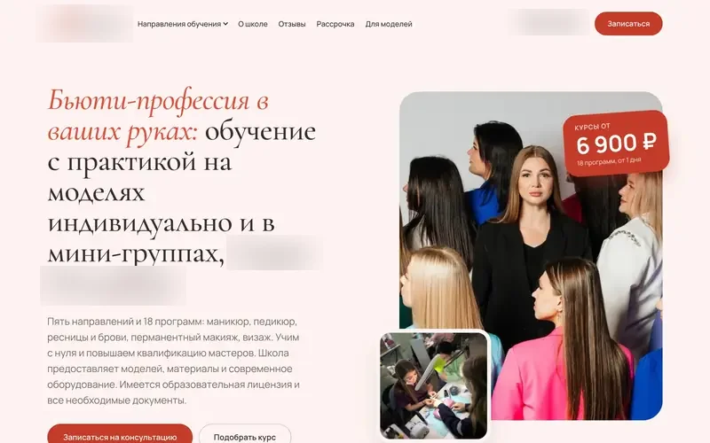
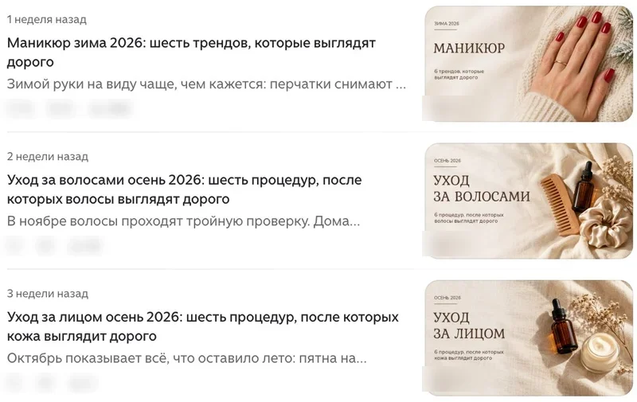
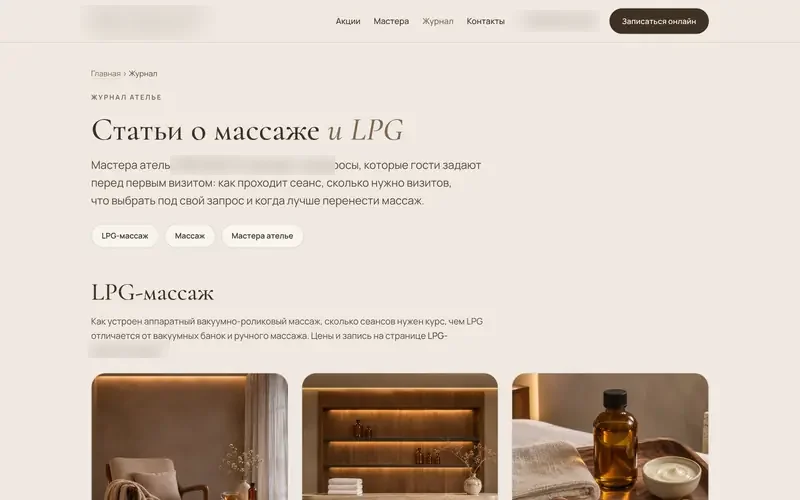
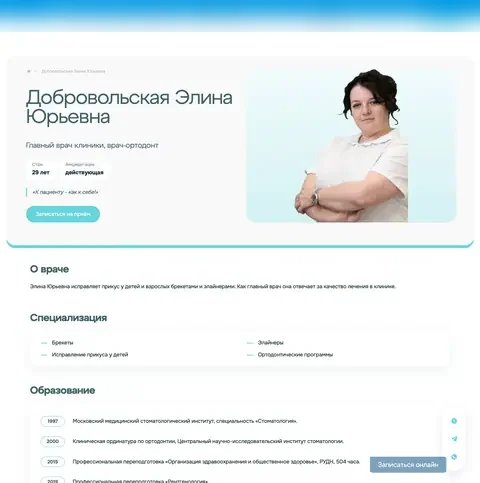
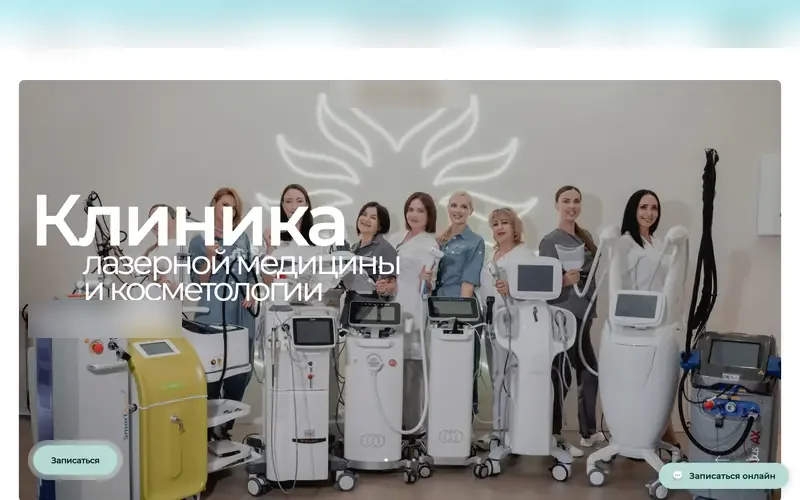
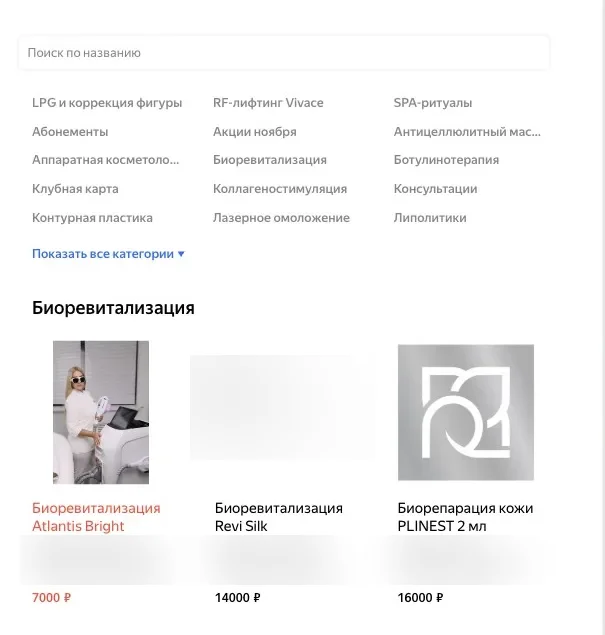
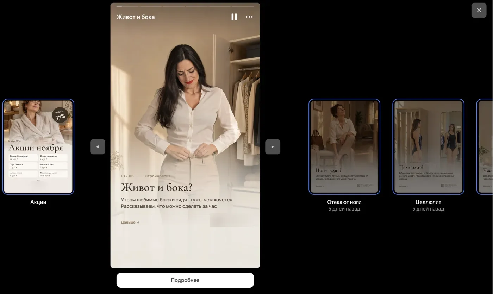
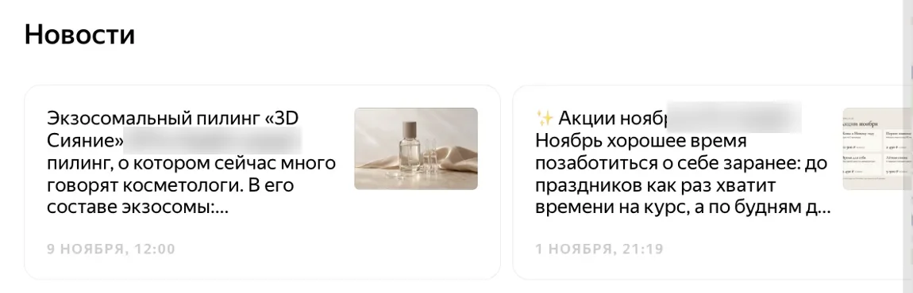

Аудит и развитие сайта
- Зачем. сайт поставщика оборудования почти не находили в поиске.
- Что сделал. аудит и план правок, новые страницы товаров, статьи под вопросы покупателей.
- Результат. сайт заметно чаще показывается в Google.

Привет, я
РОМА.
Интернет-маркетолог, Санкт-Петербург
Помогу со всем, что происходит у бизнеса в интернете: сайты и лендинги, статьи и Дзен, карты и отзывы, реклама, аналитика и автоматизация. С удовольствием берусь за новые проекты, и чем необычнее задача, тем интереснее.
WordPress и Тильда: страницы с нуля, перенос, цены, акции, формы заявок.
Темы по спросу, заголовок под запрос, проверка просмотров через двое суток.
Яндекс Бизнес, 2ГИС, отраслевые площадки, блок отзывов прямо на сайте.
Я интернет-маркетолог: сайты, контент, карты, реклама, аналитика и автоматизация. Могу взять проект целиком или подключиться к одной задаче. Работаю удалённо, за новую нишу берусь спокойно: сначала разбираюсь в продукте и в том, как о нём говорят покупатели.
Цифры сверяю с источником, тексты с правилами площадок и рекламы, страницы смотрю на компьютере и на телефоне. Так веду несколько проектов одновременно и держу качество. Новая ниша для меня повод разобраться глубже.
«Нейросети берут на себя рутину. Решения, проверку и ответственность за результат оставляю себе.»
WordPress и Тильда, страницы и сайты с нуля, перенос между платформами.
Блоги и Дзен по поисковому спросу, подготовка сайта к Яндексу и к ответам ИИ-помощников.
Короткие ролики для YouTube и Рутуба: названия, описания, обложки, метки для аналитики.
Карточки, прайс, публикации и ответы на отзывы в Яндексе, 2ГИС и на отраслевых площадках.
Акция выходит в один день на сайте и во всех справочниках. Email и ВКонтакте со статистикой.
VK Реклама, Яндекс Директ, дашборды по данным CRM, радар конкурентов.
Работы 2026 года. У каждой коротко: зачем это было нужно, что я сделал и что получилось, если результат был.





Зачем. отвечать на вопросы людей до записи и приводить их на сайт из поиска.
Что сделал. статьи по расписанию, подключил Метрику и Вебмастер.

Зачем. чтобы человек доверял специалисту ещё до записи.
Что сделал. стаж, образование, документы, ссылки на услуги и запись.

Зачем. сайт был закрыт от поиска, а цены на нём расходились с настоящими.
Что сделал. открыл сайт поиску, поставил защищённое соединение и разметку, цены беру из выгрузки CRM, акции меняю каждый месяц.
Короткие записи экрана: так страницы видит посетитель. Видео без звука и запускаются, когда до них доходишь.
Зачем. человек выбирает направление и записывается в пару нажатий, с компьютера и с телефона.
Зачем. повод заходить на сайт каждый день в декабре: каждый день открывается новое окошко с предложением.
Зачем. покупатель видит, что умеет аппарат, и сразу оставляет заявку.
Зачем. страница под рекламу: первый экран цепляет и ведёт к записи на пробный визит.
Зачем. каждый участник сразу находит программу для своей роли в команде и записывается.
Карточка на картах работает как вторая витрина: услуги с ценами и фото, истории, акции, ответы на отзывы. Так это выглядит.


Зачем. показать процедуры и акции тем, кто листает карточку и ещё выбирает.

Зачем. карточка выглядит живой, новости и акции видны прямо на карте.
Зачем. хорошие отзывы с карт работают и на сайте.
Зачем. человек видит цену заранее и приходит, уже зная, сколько заплатит.
Что сделал. веду прайсы в Яндекс Бизнесе и 2ГИС, обновляю вместе с прейскурантом.
Зачем. по фото и описанию проще понять, что за услуга, и выбрать её.
Что сделал. собираю услуги с фото и ценами и раскладываю по понятным разделам.
Зачем. люди читают и отзывы, и ответы на них, прежде чем выбрать.
Что сделал. отвечаю на картах и отраслевых площадках. Если площадка отклонила ответ, разбираюсь почему и переписываю.
Зачем. карточку смотрят каждый день, и она должна оставаться свежей.
Что сделал. сверяю цены и фото, пробую новые форматы историй и акций.
Это живёт в рекламных кабинетах, таблицах и CRM, поэтому рассказываю словами: зачем и что сделано.
Зачем. заявки по понятной цене, а не просто показы.
Что сделал. VK Реклама и Яндекс Директ: кампании, тексты, картинки, цели в Метрике. Каждую неделю разбираю путь от клика до заявки.
Зачем. видеть, что работает, без ручных отчётов.
Что сделал. дашборд по данным CRM, который обновляется сам, радар конкурентов, разбор звонков администраторов.
Зачем. напоминать о себе тем, кто уже был клиентом.
Что сделал. email под ключ в Unisender со статистикой, рассылки ВКонтакте через Senler.
Зачем. заявки из рекламы лежали на почте, их забывали.
Что сделал. заявки из лид-формы ВКонтакте сами уходят в рабочий мессенджер.
Зачем. люди нажимали «Записаться», а заявки не доходили.
Что сделал. нашёл, где форма ломалась на телефоне, и переделал.
Результат. заявки с телефона больше не теряются.
Зачем. рутина не должна отнимать время у работы.
Что сделал. перенос большого сайта с Тильды на WordPress с тем же дизайном, задачи по расписанию: статьи, проверки сайтов, отчёты.
Расскажи, что нужно бизнесу, и я предложу, с чего начать. Незнакомая ниша или необычная задача только в радость.